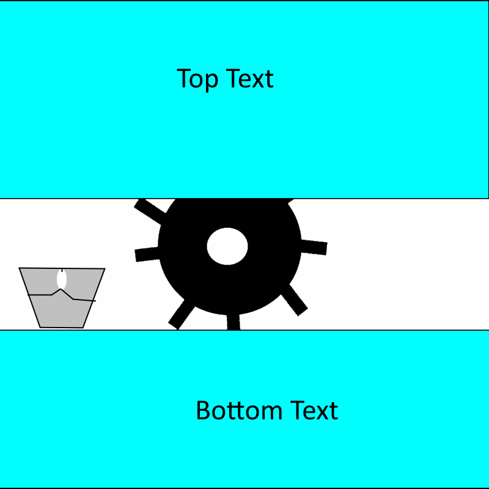

Initial Design Image:

Explaination
A company I found out about (I have since forgotten what they're called ) had a cool feature on the
desktop view of their main page that would have text sections with a large gap between then.
In the gap, was a cog that would rotate as you scrolled down, which I thought was a really cool
effect.